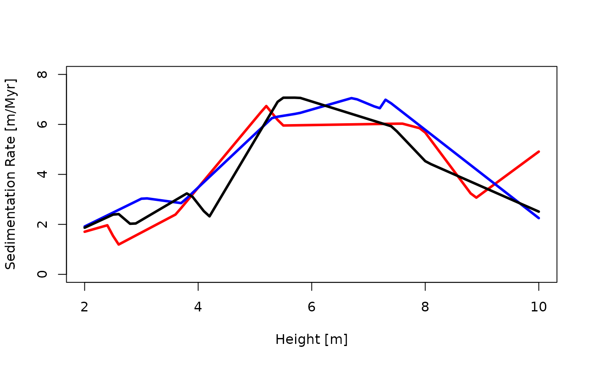

Estimating Age-Depth Models from Sedimentation Rates
Niklas Hohmann
Source:vignettes/adm_from_sedrate.Rmd
adm_from_sedrate.RmdIntroduction
This vignette explains how to estimate age-depth models (ADMs) from
sedimentation rates and tie points using the function
sedrate_to_multiadm
Inputs
The sedrate_to_multiadm function estimates age-depth
models from sedimentation rates and position and timing of tie points.
It takes the following inputs that encode user knowledge:
h_tp: a function encoding stratigraphic positions of tie pointst_tp: a function encoding times of the tie pointssed_rate_gen: a function encoding how sedimentation rates change with stratigraphic positions. This information can for example be derived from cyclostratigraphic analyses.
In addition, it takes the following inputs that specify the estimation procedure:
h: vector of heights where the ADM is determinedno_of_rep: integer, number of runs
Additional parameters that determine the numeric behavior of the
integration method used are subdivisions and
stop.on.error. The parameters T_unit and
L_unit can be used to associate time and length units with
the generated age-depth model.
Example
We construct an age depth model for a section of 10 m thickness where upper and lower bounds on sedimentation rates are available. This is a simplified example, details on how arbitrary sedimentation rates can be encoded can be found below.
Data
We start by defining the section as well as lower and upper bounds on sedimentation rates
h_min = 2 # lower boundary of the section
h_max = 10 # upper boundary of the section
T_unit = "Myr"
L_unit = "m"We want to know the age-depth model every 10 cm, so we define
h = seq(h_min, h_max, by = 0.1)Tie points
We assume there is one tie point in the section at 5 m height, and its mean age is 66 years with a standard deviation of 0.25 Myr
h1 = 5
mean_age = -66
sd = 0.25 Then the tie point timing is given by
t_tp = tp_time_norm(mean = mean_age, sd = sd)and the tie point height is given by
h_tp = tp_height_det(heights = h1)Every time t_tp is evaluated, it returns one possible
time of the tie points. Similarly, every time h_tp is
evaluated, it returns the stratigraphic position of the tie point (which
is deterministic in this case):
h_tp()
#> [1] 5
t_tp()
#> [1] -66.35001Sedimentation rates
We assume the following upper and lower limits for sedimentation rates:
sedrate_max_y = c(2,5,8,5)
sedrate_max_x = c(1,4,6,10)
sedrate_min_y = c(1,1,7,0.5)
sedrate_min_x = sedrate_max_x Here, sedrate_max_y[i] is the upper limit on
sedimentation rate at sedrate_max_x[i] (mutatis mutandis
for sedrate_min). Between these points, we assume linear
interpolation. This is done by the function
sed_rate_gen_from_bounds:
sedrate = sed_rate_gen_from_bounds(h_l = sedrate_min_x,
s_l = sedrate_min_y,
h_u = sedrate_max_x,
s_u = sedrate_max_y,
rate = 1)Because the sedimentation rates are uncertain, functions returned by
sedrate will differ each time the function is evaluated. As
an example, we plot three different sample paths (realizations) of the
sedimentation rate through the section:
plot(NULL,
xlim = range(h),
ylim = c(0, max(c(sedrate_max_y))),
xlab = "Height [m]",
ylab = "Sedimentation Rate [m/Myr]")
no_sedrates = 3
cols = c("red", "blue", "black")
for (i in seq_len(no_sedrates)){
sedrate_sample = sedrate()
lines(h, sedrate_sample(h), lwd = 3, col = cols[i])
}
These sedimentation rates assume sedimentation rates are drawn from a
uniform distribution between the upper and lower limits of sedimentation
rate provided by the user. This is done at random locations determined
according to a Poisson point process with rate rate.
Estimate age depth model
With tie points and sedimentation rates specified, we can now estimate the age depth model using
my_adm = sedrate_to_multiadm(h_tp = h_tp,
t_tp = t_tp,
sed_rate_gen = sedrate,
h = h,
T_unit = T_unit,
L_unit = L_unit)The age-depth model can be plotted using
plot(my_adm)
You can extract mean, median, and quantile age-depth models using
mean_adm, median_adm and
quantile_adm:
Coding tie points
Background
Times and heights of tie points are coded via the functions
t_tp (timing) and h_tp (height) that take no
inputs. They serve as wrappers around user-defined procedures that
reflect uncertainties around tie points. Every time t_tp
and h_tp are evaluated, they return possible values for the
tie points. Conceptually, both t_tpand h_tp
are user implemented random number generators that draw from the
distributions of tie points. Writing these functions requires some
effort, but it allows the user to hand over arbitrarily complex
uncertainties of the tie points to the sedrate_to_multiadm
function.
Wrappers
Multiple wrappers are available to simplify coding tie points:
tp_height_detfor specifying deterministic stratigraphic heightstp_time_detfor specifying deterministic time pointstp_time_floating_scaleto encode time tie points for floating time scaletp_time_normfor normally distributed tie points in time
Manually coding tie points
Both t_tp and h_tp must return strictly
ordered numeric vectors of times/heights. This means that it is the
users responsibility to avoid inversions of times/heights.
As an example, I assume the stratigraphic positions of the tie points are known without uncertainty, and are at 10 and 20 m stratigraphic height.
h_min = 10 # stratigraphic height of lower tie point [m]
h_max = 20 # stratigraphic height of upper tie point [m]h_tp is then implemented as follows:
When evaluated, this function returns the stratigraphic positions of the tie points:
h_tp()
#> [1] 10 20Note that the h_tp defined here is a synonym for
h_tp = tp_height_det(c(h_min, h_max)).
For a more complex example, I assume that the timing of the first tie
point follows a normal distribution with mean 0 and standard deviation
0.5. For the second tie point, only maximum and minimum time is
available. Due to the lack of information, I assume a uniform
distribution between the minimum (9) and the maximum (11). This is
implemented as follows in t_tp:
t_tp = function() {
repeat{
# timing first tie point
t1 = rnorm(n = 1, mean = 0, sd = 0.5)
# timing second tie point
t2 = runif(n = 1, min = 9, max = 11)
if (t1 < t2){ # if order is correct, return values
return(c(t1, t2))
}
}
}
t_tp() # evaluating the function returns a random pair of times drawn from the specified distribution
#> [1] 0.2729596 10.6250840Using Myr as time unit, the distribution of times for the tie points is as follows:
Coding sedimentation rates
Background
Mathematically, sedimentation rates are assumed to be stochastic processes. With each iteration of the estimation procedure, a sample path is generated from the stochastic processes. This sample path reflects one possible change of sedimentation rate in the section, given our uncertainties about it.
Computationally, this is implemented using function factories, which are functions that return functions. A function factory defines a stochastic process, and each function generated by a function factory is a sample path. In turn, returns the value of the sample path at .
Here, function factories are used as complex random number generators: Instead of returning one or multiple random numbers, they return a random function.
Wrappers
Available wrappers to define sedimentation rates are
sed_rate_gen_from_bounds: generate sed. rate from upper and lower bounds on the sedimentation rate (see above)sed_rate_from_matrix: specify sedimentation rate based on matrix, to be used in conjunction withget_data_from_eTimeOpt. This allows to have sedimentation rates change both at deterministic and randomized heights, see?sed_rate_from_matrixfor details.sed_rate_gen_gamma: generate sed. rate based on gamma distribution.
Manually coding sedimentation rates
Sedimentation rates must be coded as function factories, i.e., functions that return functions. They must be able to take vector inputs and return a vector of the same length as output, and always return strictly positive values.
As example, I use a simple sedimentation rate model, where only upper and lower bounds on sedimentation rates in the section are known. Between these limits, I assume a uniform distribution.
h_min = 10
h_max = 90
# limits on sed. rates
lower_limit = c(0.1,2,0.1,10)
upper_limit = c(0.2,3,2,12)
# strat intervals where sed rates are defined
s = c(h_min, 30,65, 80, h_max)Based on these parameters, the sedimentation rate function factory is defined as follows:
# define function factory
sed_rate_fun = function(){
# draw sed rates from uniform distribution
aa = runif(n = length(lower_limit), min = lower_limit, max = upper_limit)
# define sed rate "realization" based on samples from uniform distribution
sed_rate_fun = approxfun(x = s,
y = c(aa, aa[length(aa)]),
method = "constant",
rule = 2,
f = 1)
return(sed_rate_fun)
}Note that the inner function is a function of one variable (height),
while the outer function takes no arguments - it simply returns the
inner function. To visualize this, let’s plot three sedimentation rates
generated by the “sedimentation rate function factory”
sed_rate_fun:
plot(NULL,
xlim = c(h_min, h_max),
ylim = c(0, max(upper_limit)),
xlab = "Stratigraphic Height [m]",
ylab = "Sedimentation Rate")
no_of_sedrates = 3 # no. of sed rates displayed
h = seq(h_min,h_max, by = 0.1) # strat. positions where sed rates are plotted
cols = c("red", "blue", "black")
for (i in seq_len(no_of_sedrates)){
# generate sed rate from the factory
sed_rate_sample = sed_rate_fun()
# plot sed rate in the section
lines(h, sed_rate_sample(h), col = cols[i])
}All sedimentation rates generated by sed_rate_fun will
be different, because they are determined by random numbers.
Further information
For information on estimating age-depth models from tracer contents of rocks and sediments, see
vignette("adm_from_trace_cont")For details on plotting ADMs see
For an overview of the structure of the admtools package
and the classes used therein see
vignette("admtools_doc")For an overview over all available vignettes for the
admtools package use
browseVignettes(package = "admtools")